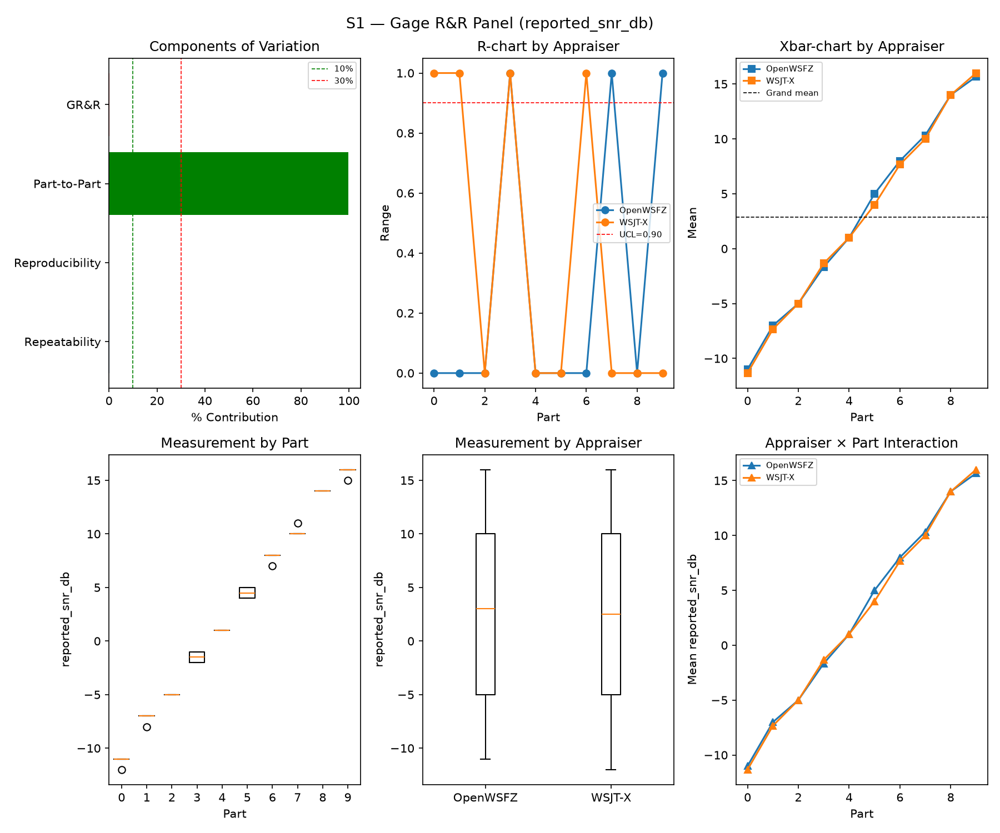
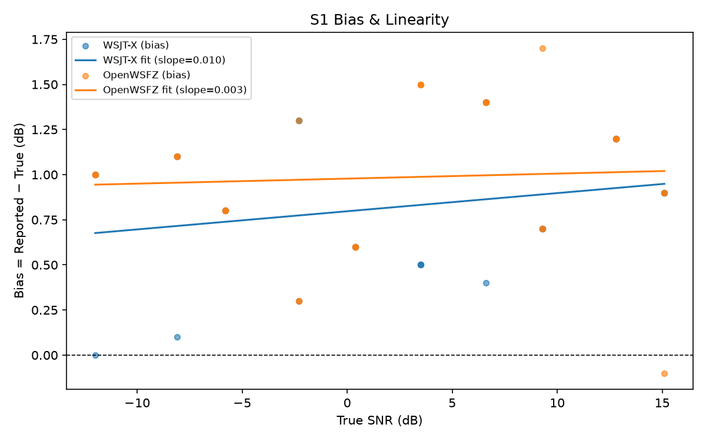
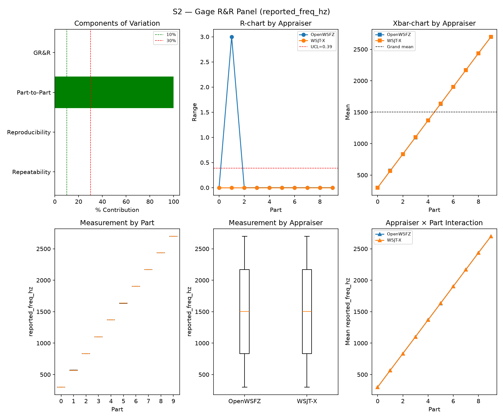
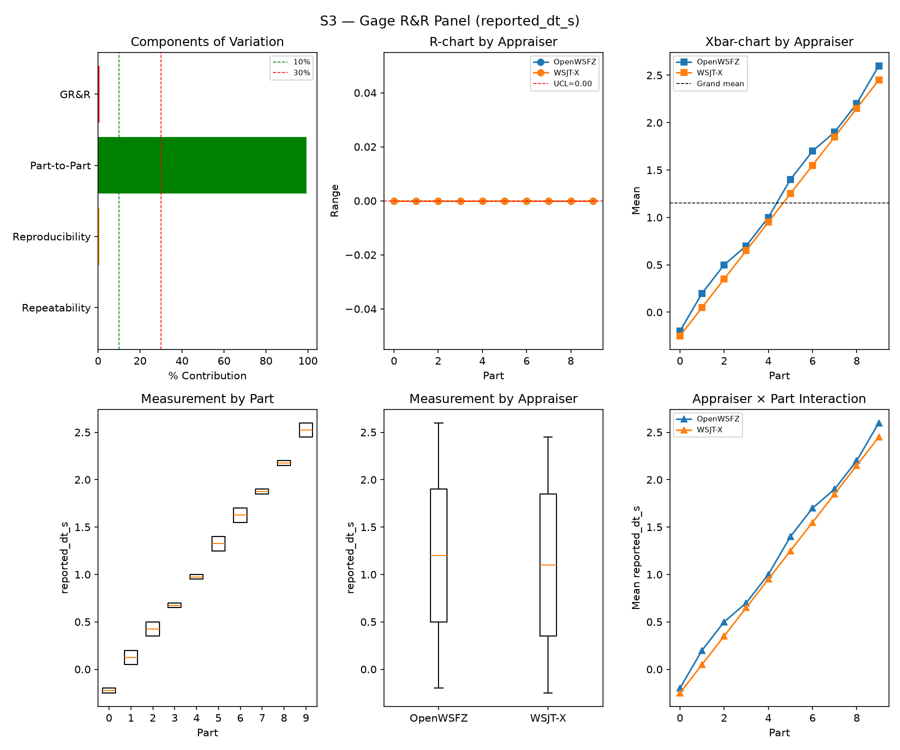
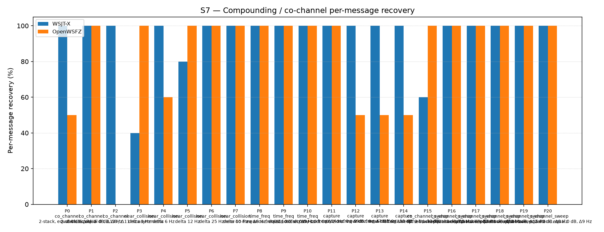
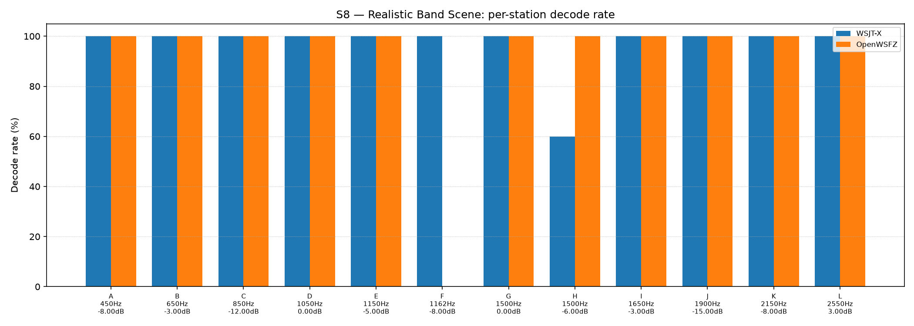

OpenWSFZ R&R Study Report
| Field | Value |
|---|---|
| Run date | 2026-09-14 |
| OpenWSFZ SHA | db3a3085 (corrected in place — see note below) |
| WSJT-X version | WSJT-X 2.7.0 (inferred from binary date 2025-02-04) |
🔴 SHA field corrected (HK-022).
analyse.pyreadsgit rev-parse HEADlive when the analyser runs, at the end of the battery — it does not use the SHA the run directory itself is pinned to (results/2026-09-14-db3a308, fixed at battery start, 2026-08-27 Item 1 convention). Between S2 and S3, QA fast-forwarded this worktree'smainto0e5d994a(PR #176 — an automated, source-free rebuild of the Linux/macOS native binaries only, to bring them to shim20260051). The analyser therefore recorded0e5d994ahere, which is not what decoded this battery. Independently verified: the daemon serving every scenario in this run was PID 33412, started 2026-09-14 20:23:11 and never restarted (Get-Process -Id 33412checked immediately after the run finished, same start time); its win-x64libft8.dllwas not touched by PR #176 (onlylinux-x64/libft8.soandosx-arm64/libft8.dylibchanged) and was independently SHA-256-verified againstsrc/OpenWSFZ.Ft8/Native/win-x64/libft8.dllatdb3a3085before the run started (91997e38038d9328edcb49cd1e8661706d0092ed2c73e808094c96c3980ad2c6, matching). The actual code under measurement in this report isdb3a3085in full, including on Windows —0e5d994a's only difference from it is on two platforms this run never touched. Lesson for future batteries: don't fast-forward the worktree mid-run even for a source-free PR —analyse.py's SHA field isn't pinned the wayrun_scenario.py's output directory is.
Section 1 — Study hypothesis
Purpose of this run. First full S1–S8 sweep against db3a3085 (main), the merge of PR #175
(PASSBAND-140 ship): the FT8 candidate passband widened [200,3000) → [140,3075) Hz,
FT8_SHIM_VERSION 20260050→20260051. This is the standard post-merge regression net for a
genuine src/native change (not a docs-only merge), run against the six-sweep 4584900d
same-build baseline batch established 2026-09-12/13 (results/2026-09-13-4584900-5/report.md
Section 6) — the most recent point at which every cell in this battery has a known, multiply-
replicated reading to compare against.
Null hypotheses in scope.
- H0(regression net): none of S1/S2/S3/S7/S8's headline metrics move outside the 4584900d
batch's established envelope in a way attributable to db3a3085.
- H0(S4 recall unchanged): OpenWSFZ's S4 confusion-matrix TP/FN stay at the batch's own
bit-identical reading (TP=96, FN=12) — the passband change only widens the candidate-search
aperture at the edges, so in-band recall should be untouched.
- H0(Gate A-W) / H0(Gate A-Δ): the trailing-window AWGN false-positive rate stays within its
ratified bounds.
What would constitute a meaningful result. The passband-140 acceptance measurement
(qa/rr-study/2026-09-14-1707-qa-to-architect-passband-140-result.md) already found and accepted
a small, licensed FP-adjacent cost on live 20m traffic (A3: unmatched-density ratio 1.80× < 3×
flag, no material in-band cost, D_in(C2)≈0). A small, non-gate-crossing OpenWSFZ-only S5
movement here — the first empirical touchpoint of that same change on fresh synthetic AWGN —
would corroborate that finding, not contradict it. Any movement in the continuous S1/S2/S3
GR&R metrics would be surprising, since the change touches only candidate-search bounds, not the
downstream SNR/frequency/DT estimation logic.
S1 — reported_snr_db
Variance Components
| Component | σ² | %Contribution |
|---|---|---|
| Repeatability | 0.12 | 0.14% |
| Reproducibility | 0.04 | 0.05% |
| Part-to-Part | 83.82 | 99.81% |
| Total GR&R | 0.16 | 0.19% |
| Total | 83.98 | 100.00% |
Study Metrics
| Metric | Value | Verdict |
|---|---|---|
| %Contribution (GR&R) | 0.19% | PASS |
| %Tolerance (GR&R) | 24.08% | — |
| %Study Var (GR&R) | 4.38% | — |
| ndc | 32 | PASS |

Bias & Linearity (S1)
| Appraiser | Mean Bias (dB) | Slope | Intercept | R² | Verdict |
|---|---|---|---|---|---|
| WSJT-X | +0.82 | 0.010 | 0.797 | 0.057 | PASS |
| OpenWSFZ | +0.98 | 0.003 | 0.978 | 0.004 | PASS |

S2 — reported_freq_hz
Variance Components
| Component | σ² | %Contribution |
|---|---|---|
| Repeatability | 0.15 | 0.00% |
| Reproducibility | 0.40 | 0.00% |
| Part-to-Part | 652845.67 | 100.00% |
| Total GR&R | 0.55 | 0.00% |
| Total | 652846.22 | 100.00% |
Study Metrics
| Metric | Value | Verdict |
|---|---|---|
| %Contribution (GR&R) | 0.00% | PASS |
| %Tolerance (GR&R) | 55.62% | — |
| %Study Var (GR&R) | 0.09% | — |
| ndc | 1536 | PASS |

S3 — reported_dt_s
Variance Components
| Component | σ² | %Contribution |
|---|---|---|
| Repeatability | 0.00 | 0.00% |
| Reproducibility | 0.01 | 0.75% |
| Part-to-Part | 0.83 | 99.25% |
| Total GR&R | 0.01 | 0.75% |
| Total | 0.83 | 100.00% |
Study Metrics
| Metric | Value | Verdict |
|---|---|---|
| %Contribution (GR&R) | 0.75% | PASS |
| %Tolerance (GR&R) | 118.59% | — |
| %Study Var (GR&R) | 8.66% | — |
| ndc | 16 | PASS |

WSJT-X DT correction applied. A +0.55 s offset was added to WSJT-X
reported_dt_sbefore ANOVA to remove the ≈ −0.55 s convention difference between WSJT-X (DT relative to nominal FT8 TX start) and the harness (DT relative to UTC slot boundary). This correction removes the calibration artefact from SS_appraiser so %GR&R measures genuine app-to-app measurement disagreement. Raw reported values are preserved in the matched CSV. See scenariowsjt_dt_correction_sfield and R&R-003 (GitHub #1).
S1b — Low-SNR threshold study
Decode rate (% of injected messages recovered) at SNRs excluded from the redesigned S1 ladder (−24 to −15 dB). Companion to S1; separates 'does it decode at this SNR?' from 'how accurately does it measure SNR?'. Informational — no AIAG threshold.
Per-part decode rate
| Part | True SNR (dB) | WSJT-X decoded | WSJT-X rate | OpenWSFZ decoded | OpenWSFZ rate |
|---|---|---|---|---|---|
| P0 | -24.00 | 0/3 | 0.00% | 0/3 | 0.00% |
| P1 | -21.00 | 1/3 | 33.33% | 0/3 | 0.00% |
| P2 | -18.00 | 3/3 | 100.00% | 3/3 | 100.00% |
| P3 | -15.00 | 3/3 | 100.00% | 3/3 | 100.00% |
Overall decode rate — WSJT-X: 58.33% OpenWSFZ: 50.00%

Attribute Agreement Analysis (S4 positives + S5 negatives)
κ is computed over a pooled population: S4 injected messages (truth = present) and S5 signal-free slots (truth = absent), so the truth vector has both classes. κ verdicts below are advisory — the §10 attribute gate is pending Captain ratification of this pooled method.
Confusion vs truth
| Appraiser | TP | FN | FP | TN | Recovery | Specificity |
|---|---|---|---|---|---|---|
| WSJT-X | 101 | 7 | 0 | 180 | 93.52% | 100.00% |
| OpenWSFZ | 96 | 12 | 1 | 179 | 88.89% | 99.44% |
Kappa (advisory)
| Pair | κ | 95% CI | Verdict (advisory) |
|---|---|---|---|
| OpenWSFZ_vs_truth | 0.902 | [0.85, 0.95] | PASS |
| WSJT-X_vs_truth | 0.947 | [0.91, 0.98] | PASS |
| between_appraisers | 0.954 | — | PASS |
Within-app repeatability (decision consistency across trials)
| Appraiser | Consistent groups |
|---|---|
| WSJT-X | 97.50% |
| OpenWSFZ | 97.50% |
Kappa — decodable-SNR-restricted positives (informational, floor -12 dB)
_S4 positives below the decodable-SNR floor are excluded (S5 negatives unchanged); shown alongside the full-population figures above per STUDY-SPEC.md §9.3's second ratification condition. Informational only — does not affect the §10 gate or the overall verdict.
| Appraiser | TP | FN | FP | TN | Recovery | Specificity |
|---|---|---|---|---|---|---|
| WSJT-X | 81 | 0 | 0 | 180 | 100.00% | 100.00% |
| OpenWSFZ | 81 | 0 | 1 | 179 | 100.00% | 99.44% |
| Pair | κ | 95% CI | Verdict (informational) |
|---|---|---|---|
| OpenWSFZ_vs_truth | 0.991 | [0.97, 1.00] | PASS |
| WSJT-X_vs_truth | 1.000 | [1.00, 1.00] | PASS |
| between_appraisers | 0.991 | — | PASS |
False-positive rate (S5) — Gate A (AWGN, parts 0/1)
| Appraiser | FP events / slots | Event rate | 95% UB | Decode rate | Verdict |
|---|---|---|---|---|---|
| WSJT-X | 0 / 120 | 0.00% | 2.47% | 0.00% | INFO |
| OpenWSFZ | 1 / 120 | 0.83% | 3.89% | 0.83% | INFO |
Per-sweep reading (STUDY-SPEC §10, ratified 2026-07-04, R&R-004; population re-affirmed S5-GATE-SIZING Amendment 1, 2026-09-06) of the per-slot FP event rate on AWGN slots (parts 0/1) ONLY, one-sided 95% Clopper–Pearson upper bound shown for reference. Decode rate is reported for reference only. SUPERSEDED as a gate by R&R-011 (2026-09-08): always INFO. At N=120 this reading cannot separate 'unchanged' (P(FAIL)=0.739 at the established 3.182% rate) from 'twice as bad' (P(FAIL)=0.984) — see the ratified compliance verdict in Gate A-W below, which reads this same quantity on a trailing 480-slot window instead. Never pooled with Check B below, nor with Gate A-W/Gate A-Δ — see those tables' own notes.
False-positive rate (S5) — Gate A-W / Gate A-Δ (trailing window, R&R-011)
| Gate | Value | Verdict |
|---|---|---|
| Gate A-W (compliance) | 1/480 = 0.208%, 95% UB 0.984% (PASS iff ≤ 6%) | PASS |
| Gate A-Δ (change) | 1/120 (newest) vs 0/360 (rest of window), Fisher(greater) p=0.2500 (FAIL iff ≤ 0.05) | PASS |
_Gate A-W (R&R-011, PO ruling Option A, 2026-09-08) — the ratified 6% UB (STUDY-SPEC §10, unchanged, not re-ratified) read on a trailing at least 480-AWGN-slot window (unit is the slot, not the sweep; the fill loop admits whole runs, so actual N can overshoot up to the largest single run's slot count — reported above as 480, never quoted as a bare "480". Amendment 1, §3: overshoot only adds power, never loosens the ceiling, since P(UB₉₅≤C|p=C)≤0.05 holds at every N). Gate A-Δ — newest sweep vs the rest of that same window, one-sided Fisher at 0.05. Two separate rows, never pooled: ROW 1 (Gate A-W FAIL) and ROW 2 (Gate A-Δ FAIL) can both fire independently. Honest costs: the window lags — a regression introduced this sweep is diluted 1:4 and takes up to four sweeps to reach full weight; Gate A-Δ is blind below ~2× (power 0.40 at 2×, 0.82 at 3×). A PASS may not be read as "nothing moved".
Leave-one-sweep-out (spec Sec.4.7): all 4 single-sweep deletions leave Gate A-W's verdict unchanged — not FRAGILE.
False-positive rate (S5) — Check B (narrowband, parts 2/3)
| Appraiser | FP events / slots | Verdict |
|---|---|---|
| WSJT-X | 0 / 60 | PASS |
| OpenWSFZ | 0 / 60 | PASS |
Check (S5-GATE-SIZING Amendment 1, PO ruling Option 3, 2026-09-06 20:29 UTC): a coverage net for narrowband hallucination (steady carrier / birdies), scored on its OWN 60-slot denominator — FAIL iff events ≥ 2. Threshold derived in the spec's A1.2 from the measured all-history per-slot narrowband base rate (0.2347%, s5_narrowband_exposure_verify.py, ROW 0 cleared 2026-09-06), well under the ~1% re-derivation trigger. This is a raw event-count check, not a Clopper–Pearson UB gate, so there is no STATISTICAL small-N demotion analogous to MIN_N_FOR_FP_GATE — but INFO here means something distinct: zero narrowband slots were injected at all (Check B did not run this battery, e.g. a targeted --parts 0,1 recheck). That is a coverage gap, never a PASS — asserting PASS with no slots run would reproduce the exact blindness this design exists to remove. Never pooled with Gate A above into one S5 rate or one verdict line — the same 180 slots FAIL under no change 21% of the time scored as one gate; scored as two, Gate A alone FAILs under no change 77% of the time (its own false-alarm rate at N=120, corrected 2026-09-08 — see R&R-011; not a detection rate).
S7 — Compounding / co-channel overlap
Per-message recovery when 2–3 signals occupy the same or near-same audio frequency / time slot (the pileup case S4 does not exercise). Informational — no AIAG threshold is defined for co-channel separation.
Recovery by overlap family
| Overlap family | WSJT-X | OpenWSFZ |
|---|---|---|
| capture | 100.00% | 62.50% |
| co_channel | 100.00% | 42.86% |
| co_channel_sweep | 93.33% | 100.00% |
| near_collision | 84.00% | 92.00% |
| time_freq | 100.00% | 100.00% |
| all | 94.42% | 81.86% |
Capture effect (co-channel, unequal SNR)
| Signal | WSJT-X | OpenWSFZ |
|---|---|---|
| strong | 100.00% | 100.00% |
| weak | 100.00% | 25.00% |
Between-app per-signal agreement: 76.28%
Per-part detail
| Part | Family | Condition | WSJT-X | OpenWSFZ |
|---|---|---|---|---|
| P0 | co_channel | 2-stack, equal 0 dB, Δ7 Hz | 10/10 | 5/10 |
| P1 | co_channel | 2-stack, equal -5 dB, Δ13 Hz | 10/10 | 10/10 |
| P2 | co_channel | 3-stack, equal 0 dB, Δ8 / Δ11 Hz asymmetric | 15/15 | 0/15 |
| P3 | near_collision | delta 3 Hz | 4/10 | 10/10 |
| P4 | near_collision | delta 6 Hz | 10/10 | 6/10 |
| P5 | near_collision | delta 12 Hz | 8/10 | 10/10 |
| P6 | near_collision | delta 25 Hz | 10/10 | 10/10 |
| P7 | near_collision | delta 50 Hz | 10/10 | 10/10 |
| P8 | time_freq | near-co-freq Δ8 Hz, dt 0.0 / 0.5 s | 10/10 | 10/10 |
| P9 | time_freq | near-co-freq Δ11 Hz, dt 0.0 / 1.0 s | 10/10 | 10/10 |
| P10 | time_freq | near-co-freq Δ9 Hz, dt 0.0 / 2.0 s | 10/10 | 10/10 |
| P11 | capture | near-co-freq Δ14 Hz, 0 / -3 dB | 10/10 | 10/10 |
| P12 | capture | near-co-freq Δ9 Hz, 0 / -6 dB | 10/10 | 5/10 |
| P13 | capture | near-co-freq Δ7 Hz, 0 / -10 dB | 10/10 | 5/10 |
| P14 | capture | near-co-freq Δ11 Hz, +3 / -10 dB | 10/10 | 5/10 |
| P15 | co_channel_sweep | offset-sweep: 2-stack, equal 0 dB, Δ5 Hz | 6/10 | 10/10 |
| P16 | co_channel_sweep | offset-sweep: 2-stack, equal 0 dB, Δ7 Hz | 10/10 | 10/10 |
| P17 | co_channel_sweep | offset-sweep: 2-stack, equal 0 dB, Δ10 Hz | 10/10 | 10/10 |
| P18 | co_channel_sweep | offset-sweep: 2-stack, equal 0 dB, Δ15 Hz | 10/10 | 10/10 |
| P19 | co_channel_sweep | offset-sweep: 2-stack, equal 0 dB, Δ8 Hz | 10/10 | 10/10 |
| P20 | co_channel_sweep | offset-sweep: 2-stack, equal 0 dB, Δ9 Hz | 10/10 | 10/10 |

S8 — Realistic Band Scene
Holistic decode-rate benchmark: 12 simultaneous stations across 450–2550 Hz at realistic SNR spread (−15 to +3 dB), including a near-collision pair (E/F, 12 Hz apart) and a capture pair (G/H, co-frequency, 6 dB ratio). Informational only — no PASS/FAIL gate.
Overall decode rate
| Appraiser | Decoded | Injected | Rate |
|---|---|---|---|
| WSJT-X | 58 | 60 | 96.67% |
| OpenWSFZ | 55 | 60 | 91.67% |
Between-appraiser delta (OpenWSFZ − WSJT-X): -5.0 pp
Per-station breakdown
| Stn | Freq (Hz) | SNR (dB) | WSJT-X decoded/total | OpenWSFZ decoded/total |
|---|---|---|---|---|
| A | 450 | -8.00 | 5/5 | 5/5 |
| B | 650 | -3.00 | 5/5 | 5/5 |
| C | 850 | -12.00 | 5/5 | 5/5 |
| D | 1050 | 0.00 | 5/5 | 5/5 |
| E | 1150 | -5.00 | 5/5 | 5/5 |
| F | 1162 | -8.00 | 5/5 | 0/5 |
| G | 1500 | 0.00 | 5/5 | 5/5 |
| H | 1500 | -6.00 | 3/5 | 5/5 |
| I | 1650 | -3.00 | 5/5 | 5/5 |
| J | 1900 | -15.00 | 5/5 | 5/5 |
| K | 2150 | -8.00 | 5/5 | 5/5 |
| L | 2550 | 3.00 | 5/5 | 5/5 |

Unexplained decodes (informational — no gate)
Every appraiser decode whose message text + frequency matches no injected truth row in its own cycle, across the whole battery — not just S5's signal-free slots (see False-positive rate above). Uses the harness's own match predicates (exact whitespace-normalised text AND ±4 Hz), not a frequency-blind text check. Not a gate — no threshold is pre-registered (HK-021) for this metric. Δf is the distance from the decode's reported frequency to the nearest frequency-bearing truth row in the same cycle; '—' means every truth row sharing that cycle was signal-free (e.g. a pure S5 slot). Counts and distances only, per NFR-021 — never message text or callsigns; see Section 6 for the historical series.
| Appraiser | Scenario | Count | Min Δf (Hz) | Median Δf (Hz) |
|---|---|---|---|---|
| WSJT-X | S3 | 1 | 1.0 | 1.0 |
| WSJT-X | all | 1 | ||
| OpenWSFZ | S5 | 1 | — | — |
| OpenWSFZ | S7 | 1 | 12.0 | 12.0 |
| OpenWSFZ | all | 2 |
Summary
| Metric | Scope | Value | Verdict |
|---|---|---|---|
| %GR&R | S1 | 0.2% | PASS |
| ndc | S1 | 32 | PASS |
| %GR&R | S2 | 0.0% | PASS |
| ndc | S2 | 1536 | PASS |
| %GR&R | S3 | 0.8% | PASS |
| ndc | S3 | 16 | PASS |
| Kappa (advisory) | WSJT-X_vs_truth | 0.947 | PASS |
| Kappa (advisory) | OpenWSFZ_vs_truth | 0.902 | PASS |
| Kappa (advisory) | between_appraisers | 0.954 | PASS |
| FP event rate (95% UB), Gate A-W | S5/OpenWSFZ | 1/480 slots (event 0.208%; 95% UB 0.984%) | PASS |
| FP event rate change, Gate A-Δ | S5/OpenWSFZ | 1/120 vs 0/360 (Fisher p=0.2500) | PASS |
| FP events, Check B (narrowband) | S5/WSJT-X | 0/60 slots (FAIL iff >= 2) | PASS |
| FP events, Check B (narrowband) | S5/OpenWSFZ | 0/60 slots (FAIL iff >= 2) | PASS |
| SNR bias | S1/WSJT-X | +0.82 dB | PASS |
| SNR bias | S1/OpenWSFZ | +0.98 dB | PASS |
Overall verdict: PASS
Excluded From Gate (Informational)
- ℹ️ FP event rate (S5/WSJT-X) not gated at N=120: 0/120 slots (event 0.0%; 95% UB 2.47%; decode 0.0%) — per-sweep Gate A was superseded by R&R-011 (2026-09-08): at N=120 it cannot separate 'unchanged' from 'twice as bad'. See Gate A-W below for the ratified compliance verdict.
- ℹ️ FP event rate (S5/OpenWSFZ) not gated at N=120: 1/120 slots (event 0.8%; 95% UB 3.89%; decode 0.8%) — per-sweep Gate A was superseded by R&R-011 (2026-09-08): at N=120 it cannot separate 'unchanged' from 'twice as bad'. See Gate A-W below for the ratified compliance verdict.
Section 5 — Recommendations
No gate failures. No further investigation required as a merge-blocking matter.
- ✅ Gate A-W PASS (1/480 = 0.208%, 95% UB 0.984% ≤ 6%) and Gate A-Δ PASS (1/120 this
sweep vs 0/360 rest-of-window, Fisher p = 0.2500). Per the report's own leave-one-out check, not
FRAGILE. This is the first new AWGN event OpenWSFZ has registered since the six-sweep
4584900dbatch — that batch held constant at 8/480 for its entire run (all eight events inherited from before the batch began), and by this sweep the trailing window has finally aged every one of them out, leaving only this run's own single event. Directionally consistent with — and, at N=1, far too small a sample to confirm on its own — the already-measured, already-accepted marginal FP cost of the passband widening on live traffic (2026-09-14-1707-qa-to-architect-passband-140-result.md, A3 clean). Flagged as the first empirical touchpoint of that finding in the routine regression suite, not a new concern. - ✅ S4 in-band recall completely unchanged. OpenWSFZ TP=96, FN=12 — bit-identical to all six
4584900dsweeps' own constant reading (κ moved only because the single new S5 false positive shifted the pooled confusion matrix's TN cell, 180→179; the positive-class recall itself did not move at all). The passband widening — a candidate-search-aperture change only — shows zero measurable in-band recall cost in this battery, consistent withD_in(C2)≈0from the acceptance result cited above. - ℹ️ S7 P2 (co_channel 3-stack, equal 0 dB) reads OpenWSFZ 0/15 again, matching all six
4584900dsweeps exactly (WSJT-X constant 15/15 throughout). Not new. - ℹ️ S8 station F (OpenWSFZ 0/5) continues the pattern tracked since
fbf8c0b5's own Section 5 — not a new finding, not attributable to this merge. - ℹ️ S7 P0/P1 — the real-time-capture-jitter cells flagged for Architect investigation in the
4584900dbatch's own Section 5 — show no new information this sweep. P0 (OpenWSFZ 5/10) matches a value already seen in the batch's own six-sweep series (5, 10, 9, 10, 10, 6); P1 (OpenWSFZ 10/10) reverts to the batch's original constant reading (the single 9/10 seen on the batch's closing sweep did not recur). WSJT-X held its own constant 10/10 on both parts, as throughout the batch. This run adds no evidence either way to that open, non-blocking investigation. - ℹ️ The mirrored WSJT-X-side jitter cells (S7 P3, S8 station H) also continue. P3 (WSJT-X 4/10) falls inside the batch's own established {4, 6, 10} set for this part. Station H's WSJT-X reading (3/5) is a value not seen in the six-sweep batch (which showed only 0, 2, 4) — a small extension of an already-flagged noisy cell at N=5 per sweep, not a new phenomenon.
- ℹ️ S1/S2/S3 continuous metrics and S1 bias sit within the established envelope for this build family (%GR&R 0.19%/0.0%/0.75%; bias WSJT-X +0.82 dB, OpenWSFZ +0.98 dB) — no measurable effect from the passband change on continuous SNR/frequency/DT estimation, as expected, since the change touches only candidate-search bounds.
Section 6 — Historical trend: every full S1–S8 sweep to date
Twenty-six runs now exercise the complete controlled battery (S1/S2/S3/S7 at minimum). %GR&R is
each stage's own Summary-table figure (AIAG %Contribution, threshold ≤ 10% PASS). S5 FP was the
ratified gate through 4cc1984; from 4cc1984 onward the ratified gate is the trailing-window
Gate A-W/Gate A-Δ instead (R&R-011, 2026-09-08) — each era and, where a sweep's own figures differ
from the rest of its era, each sweep, has its own footnote below, in table order. S7/S8 are the
"all"/overall decode-recovery percentages. The final column is OpenWSFZ's pooled S7+S8
matched-decode count as a percentage of WSJT-X's own — see footnote 1 for the derivation.
S4/κ is not a column in this table. It was affected by a duplicate-row attribution defect
(found and fixed 2026-09-12, PR #166, 08552dd7) across every historical sweep from 3bd4cd0
onward; the fix is present at source in every sweep from 4584900d onward, including today's
db3a3085. Mentioned here for context — it does not annotate any cell in this table, so it is not
given a footnote number.
Footnote numbering below runs in the order each note is first needed, reading the table top to bottom (the header first, then each row) — a number is never assigned out of that order, and is reused across rows only where the rows genuinely share one identical, non-unique fact stated as such (never "the first" of anything, which by definition cannot describe more than one row).
| Date | SHA | S1 %GR&R | S2 %GR&R | S3 %GR&R | S5 FP (WSJT-X / OpenWSFZ) | S7 recovery (WSJT-X / OpenWSFZ) | S8 decode rate (WSJT-X / OpenWSFZ) | OpenWSFZ, % of WSJT-X (S7+S8 pooled, excl. FP)¹ |
|---|---|---|---|---|---|---|---|---|
| 2026-06-06 | 4c34ef6 |
32.0% FAIL | 0.0% | 3.8% | 0.0% / 0.0% | 78.5% / 47.3% | — | 60.27%² |
| 2026-06-06 | 6bab388 |
6.5% | 0.0% | 3.9% | 0.0% / 0.0% | 77.4% / 46.2% | — | 59.72%² |
| 2026-06-07 | 4b3a4ca |
1.4% | 0.0% | 3.4% | 0.0% / 0.0% | 76.3% / 54.8% | 95.0% / 86.7% | 80.47% |
| 2026-06-14 | 815b652 |
0.3% | 0.0% | 3.0% | 0.0% / 0.0% | 77.4% / 50.5% | 95.0% / 83.3% | 75.19% |
| 2026-06-20 | 6e821fa |
0.4% | 0.0% | 3.0% | 0.0% / 91.7% FAIL³ | 92.6% / 70.2% | 93.3% / 86.7% | 79.61% |
| 2026-06-22 | f11f438 |
0.4% | 0.0% | 3.1% | 0.0% / 0.0% | 94.0% / 74.4% | 93.3% / 86.7% | 82.17% |
| 2026-07-04 | 793a298 |
0.5% | 0.0% | 3.4% | 0.0% / 0.0% | 96.3% / 73.0% | 93.3% / 86.7% | 79.47% |
| 2026-08-05 | 3bd4cd0 |
7.2% | 0.0% | 3.6% | 0.0% / 0.0% | 96.3% / 70.2% | 93.3% / 83.3% | 76.43% |
| 2026-08-15 | 8d6e1b1 |
0.5% | 0.0% | 1.4% | 0.0% / 0.8% | 95.3% / 74.4% | 93.3% / 86.7% | 81.23% |
| 2026-08-21 | 7d36038 |
0.3% | 0.0% | 0.4% | 0.0% / 0.8% | 95.3% / 68.4% | 96.7% / 83.3% | 74.90% |
| 2026-08-22 | f5dec23 |
0.4% | 0.0% | 0.4% | 0.0% / 3.3% FAIL⁴ | 98.1% / 79.5% | 91.7% / 91.7% | 84.96% |
| 2026-08-27 | 22b749c |
0.3% | 0.0% | 0.4% | 0.0% / 0.0% | 97.7% / 78.6% | 96.7% / 91.7% | 83.58% |
| 2026-08-29 | 872ba65 |
0.25% | 0.0% | 18.65%⁵ | 0.0% / 7.66% FAIL | 93.0% / 74.0% | 96.7% / 91.7% | 82.95% |
| 2026-08-30/31 | 2e60949 |
0.27% | 0.0% | 0.44% | 0.0% / 5.15%⁶ | 98.1% / 82.8%⁷ | 91.7% / 91.7% | 87.59% |
| 2026-09-02 | 3b52608 |
0.22% | 0.0% | 0.55% | 0.0% / 14.61% FAIL | 94.4% / 83.7% | 100.0% / 91.7% | 89.35% |
| 2026-09-03 | 35378b9 |
0.21% | 0.0% | 0.55% | 0.0% / 10.12% FAIL | 96.3% / 81.4% | 95.0% / 91.7% | 87.12% |
| 2026-09-06 | 4c7d5ad |
0.24% | 0.00% | 0.40% | 0.0% / 12.42% FAIL⁸ | 98.14% / 79.07% | 100.00% / 88.33% | 82.29% |
| 2026-09-07 | 4cc1984 |
0.20% | 0.0% | 0.59% | 0.0% / 6.33% FAIL⁹ | 99.07% / 79.07% | 91.67% / 91.67% | 83.96% |
| 2026-09-12 | fbf8c0b5 |
0.37% | 0.0% | 0.35% | 0.0% / 0.0%¹⁰ | 87.44% / 82.79% | 93.33% / 91.67% | 95.49% |
| 2026-09-12/13 | 4584900d #1 |
0.18% | 0.0% | 0.55% | 0.0% / 0.0%¹¹ | 95.35% / 76.74% | 98.33% / 91.67% | 83.33% |
| 2026-09-13 | 4584900d #2 |
0.20% | 0.0% | 0.43% | 0.0% / 0.0%¹¹ | 100.00% / 80.00% | 91.67% / 91.67% | 84.07% |
| 2026-09-13 | 4584900d #3 |
0.20% | 0.0% | 0.43% | 0.0% / 0.0%¹¹ | 95.35% / 82.79% | 95.00% / 91.67% | 88.93% |
| 2026-09-13 | 4584900d #4 |
0.30% | 0.0% | 0.60% | 0.0% / 0.0%¹¹ | 96.28% / 82.33% | 91.67% / 91.67% | 88.55% |
| 2026-09-13 | 4584900d #5 |
0.20% | 0.0% | 0.60% | 0.0% / 0.0%¹¹ | 99.07% / 84.19% | 95.00% / 91.67% | 87.41% |
| 2026-09-13 | 4584900d #6 |
0.20% | 0.0% | 0.50% | 0.0% / 0.0%¹¹ | 97.21% / 80.47% | 91.67% / 91.67% | 86.36% |
| 2026-09-14 | db3a3085 |
0.19% | 0.0% | 0.75% | 0.0% / 0.83%¹² | 94.42% / 81.86% | 96.67% / 91.67% | 88.51% |
¹ Value = pooled(OpenWSFZ S7+S8 matched decodes) ÷ pooled(WSJT-X S7+S8 matched decodes) × 100,
computed directly from each run's own S7_matched.csv/S8_matched.csv counts where available in
the QA worktree, else derived from published integers. For db3a3085 (this run): S7 203/215
(WSJT-X) vs 176/215 (OpenWSFZ); S8 58/60 (WSJT-X) vs 55/60 (OpenWSFZ); pooled 231/261 = 88.51%.
² 4c34ef6 and 6bab388 (2026-06-06) predate S8's introduction — their footnote-1 figure is
S7-only. One fact, stated as shared, not as a "first" — legitimately reused across exactly these
two rows.
³ Plain decode-rate era (pre R&R-004 ratified UB gate); not the same metric as later rows, fixed under D-009. Not comparable to the UB figures below it.
⁴ Second-ever ratified-gate FAIL, N=120 (pre R&R-009 default restriction).
⁵ Not comparable to the S1–S3 series above it — confounded by a harness playback-timing defect
discovered in that same run (872ba65's Section 5, Finding 1), not a decoder result.
⁶ N=120 (resume_study.py artefact — R&R-009's N=60 restriction not applied on resume), not the
routine N=60 battery. PASS at this N; not directly comparable to the N=60 rows around it.
⁷ S7 figure is from a 2026-08-31 targeted re-run (results/2026-08-31-2e60949/), same SHA.
⁸ 4c7d5ad (2026-09-06) ran under the OLD single-gate S5 architecture (N=60 per R&R-009), before
the Gate A/Check B split introduced the following row — its 12.42% is that run's own 95% UB
(3/60 events), not directly comparable to the post-split N=120 Gate A rows around it. (Placed here,
after 872ba65/2e60949/3b52608/35378b9 in the numbering, because 4c7d5ad was added back
into this table later — see the Section 1 history of prior reports — but its row always sat at
its correct chronological date; only the number trailed the row's own re-insertion.)
⁹ First run scored under R&R-010's Gate A / Check B split (ratified 2026-09-06 20:29 UTC;
4c7d5ad, footnote 8, ran earlier that same day under the old architecture and does not qualify).
The figure shown is Gate A (AWGN, parts 0/1, N=120). Check B (narrowband, parts 2/3, N=60) is scored
separately: 0/60, PASS, never pooled with Gate A. a3738fc (2026-07-04, a targeted N=300
S5-only confirmatory run, 8/300, PASS) is not in this table — not a full battery.
¹⁰ The one and only first run under R&R-011 (2026-09-08): per-sweep Gate A becomes INFO only from here on, superseded by the trailing-window Gate A-W/Gate A-Δ (≥480-AWGN-slot window). Gate A-W PASS (14/480=2.917%, 95% UB 4.522%), FRAGILE (leave-one-out flips the verdict).
¹¹ The 4584900d same-build repeat-measurement batch (sweeps #1–#6), not itself a "first" of
anything — a distinct fact from footnote 10 above, given its own number rather than folded into
it, precisely because reusing a footnote whose own text claims uniqueness would misdescribe six
non-first rows. Gate A-W PASS (8/480=1.667%, 95% UB 2.987%), identical across all six sweeps since
none contributed a new AWGN event; not FRAGILE.
¹² db3a3085's own S5 Gate A-W/Gate A-Δ reading — a third, distinct fact again, not the same
number as 10 or 11. This sweep is the first to register a new AWGN event since the batch above,
so its figures differ from every row footnotes 10 and 11 cover. Gate A-W PASS (1/480=0.208%, 95%
UB 0.984%), not FRAGILE (all four single-sweep leave-one-out deletions leave the verdict
unchanged). Gate A-Δ PASS (1/120 vs 0/360, Fisher p=0.2500) — the eight 4584900d-batch-era
events have fully aged out of the trailing window by this sweep, leaving only this run's own
single new event (see Section 5).